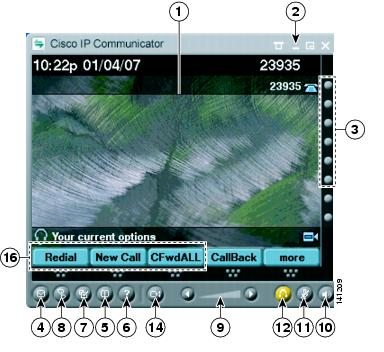
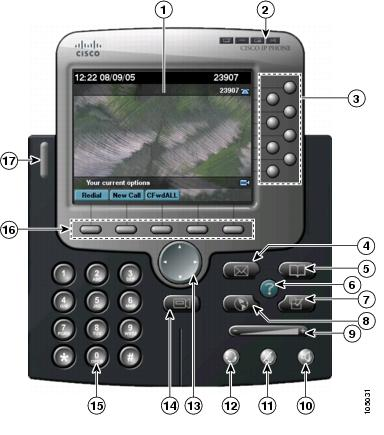

Buttons and Other Components
Table 2-2 identifies buttons and other components shared by both skins.
Figure 2-1 Cisco IP Communicator with the Compact Mode Selected

Figure 2-2 Cisco IP Communicator with the Default Mode Selected

1
Phone screen
Allows you to view call status and feature menus, and activate items. See Phone Screen Features.
2
Window control buttons
Allows you to view the menu, hide Cisco IP Communicator, toggle between skins, or quit the application. See Feature Functionality and Availability.
3
Programmable buttons
Depending on configuration, programmable buttons provide access to:
Buttons illuminate to indicate status:
You can convert extra line buttons into speed-dial buttons. See Setting Up Speed Dials
4
Messages button
Auto-dials your voice message service (varies by service). (Ctrl + M is the keyboard shortcut.) See Accessing Voice Messages.
5
Directories button
Opens or closes the Directories menu. Use it to view and dial from call logs and a corporate directory. (Ctrl + D is the keyboard shortcut.) Alternately, you can use the Quick Search feature (Alt + K) to search directories. See Using Call Logs.
6
Help button
Activates the Help menu. (Ctrl + I is the keyboard shortcut.) See Accessing Online Help.
7
Settings button
Opens or closes the Settings menu. Use it to change touchscreen and ring settings.(Ctrl + S is the keyboard shortcut.) See Customizing Rings and Message Indicators.
8
Services button
Opens or closes the Services menu. (Ctrl + R is the keyboard shortcut.) See Setting Up Phone Services.
9
Volume button
Controls audio mode volume and other settings. (Page up/Page down are keyboard shortcuts). See Adjusting the Volume for a Call.1
10
Speaker button
Toggles the speakerphone on or off. When the speakerphone is on, the button is lit. (Ctrl + P is the keyboard shortcut.) See Using Headsets and Other Audio Devices with Cisco IP Communicator.
11
Mute button
Toggles the Mute feature on or off. When the feature is on the button is lit. (Ctrl + T is the keyboard shortcut.) See Using Mute.
12
Headset button
Toggles headset mode on or off. (Ctrl + H is the keyboard shortcut.) See Using Headsets and Other Audio Devices with Cisco IP Communicator.
13
Navigation button
Allows you to scroll through menus and highlight items. Use with softkeys to activate highlighted items. Also, while the Cisco IP Communicator is on-hook, click the Navigation button to access phone numbers from your Placed Calls log.
14
Cisco Unified Video Advantage button
Launches Cisco Unified Video Advantage. You must be running Cisco Unified Video Advantage Release 2.1.1 and Cisco IP Communicator Release 2.0 (or later) on the same PC to use this feature.2
15
Keypad
Allows you to enter numbers and letters, and choose menu items. (Not available on the optional skin.) Alternately, use your computer keyboard.
16
Softkey buttons
Each activates a softkey. You can click softkey labels (instead of buttons) to activate softkeys, as well. (F2 - F6 are the keyboard shortcuts.) See Handling Calls with Cisco IP Communicator.
17
Voice message and ring indicator
Indicates an incoming call and new voice message. See Customizing Rings and Message Indicators.
1In all releases prior to release 2.0, the keyboard shortcut is Ctrl + V
2If Cisco IP Communicator is using the SIP call-control protocol, it does not support video with Cisco Unified Video Advantage. Your system administrator should tell you if your deployment supports video.
Tips
- You can click the menu icon at the top of either skin, right-click Cisco IP Communicator, or press Shift + F10 on the keyboard to view and configure settings, choose skins, and enable screen-only mode. See Using the Menu.
- The default mode (Figure 2-2) and the compact mode (Figure 2-1) use the same set of button icons. However, button shapes and locations might differ by skin.
- For a complete list of navigation shortcuts, see Using Keyboard Shortcuts.
- See Phone Screen Features for information about how calls and lines are displayed on the Cisco IP Communicator phone screen.
Copyright © 2009, Cisco Systems, Inc. All rights reserved.